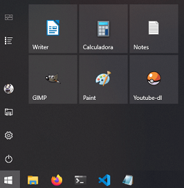
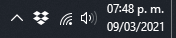

| Webtools shortcuts |
| Web tools |
F12 |
| Mobile mode |
Ctrl + Shift + m |
# Open in current dir
code .
| Shortcuts |
| Toggle comment |
Ctrl + } |
| Select all ocurrences |
Ctrl + Shift + l |
| Fold all regions |
Ctrl + 1 |
| Unfold all regions |
Ctrl + 2 |
| Format document |
Ctrl + Q |
Color Picker
Hover over any square color in any supported file.
Extensions
- Remote WSL
- Live Server
- Prettier
- REST Client
Errors
Server not loading
settings → live server → use
local ip
REST Client (VSCode)
example.http
GET https://example.com/comments/1
###
POST https://example.com/comments
content-type: application/json
{
"name": "sample",
"time": "Wed, 21 Oct 2015 18:27:50 GMT"
}
Programs
Settings
-
Sistema
-
Inicio/apagado y suspensión
- Pantalla = 10 minutos
- Suspender = Nunca
-
Portapapeles
- Historial del Portapapeles = Desactivado
-
Acerca de
- Cambiar el nombre de este equipo
-
Dispositivos
- Reproducción automática = Abrir
-
Peronalización
- Fondo
- Colores
- Pantalla de bloqueo
- Inicio
- Barra de tareas
-
Aplicaciones
- Aplicaciones y características
-
Cuentas
-
Hora e idioma
- Fecha y hora = Sincronizar ahora
-
Juegos
- Xbox Game Bar = Desactivado
-
Búsqueda
- Búsqueda de contenido en la nube (Todo) = Desactivado
- Historial = Desactivado
-
Privacidad
- Permisos de Windows (Todo) = Desactivado
-
Actualización y seguridad
- Optimización de distribución = Desactivado
Preferences


| Sans |
Arial |
| Serif |
Cambria |
| Code |
Consolas Mono |
-
Put shortcut in:
%APPDATA%\Microsoft\Windows\Start Menu\Programs
- Start Menu ➜ All Apps
- Pin to Start
-
Download
yt-dlp.exe
-
Download
FFmpeg release essentials
- Create yt-dlp directory in C
- Copy inside yt-dlp directory:
- Put C:\yt-dlp in PATH
- Assign icon to yt-dlp.lnk
- Pin yt-dlp.lnk to Start menu
- Windows Subsystem for Linux
- GNU/Linux environment for Windows
WSL2
Windows Terminal
VSCode
-
Install VSCode
- Windows side
- Install extension: Remote - WSL
- Run code . in ~/project
Quick Access: Working directory
- Run explorer.exe . in /homes/james/
Update Git
| screenshot |
| selection to clipboard |
windows + shift + s |
| window to clipboard |
alt + print |
SSD + HDD setup
- Install OS in SSD
- Format HDD as NTFS
- Configuración → Sistema → Almacenamiento → Cambiar lugar donde se guarda el
contenido nuevo
- Documentos, Imágenes, Música, Videos → Propiedades → Ubicación → Mover...
| screenshot |
| selection to clipboard |
ctrl + shift + print |
| selection to pictures |
shift + print |
| window to pictures |
alt + print |
| text |
| unicode |
ctrl + shift + u |
| delete line |
ctrl + u |
| system |
| new terminal |
ctrl + alt + t |